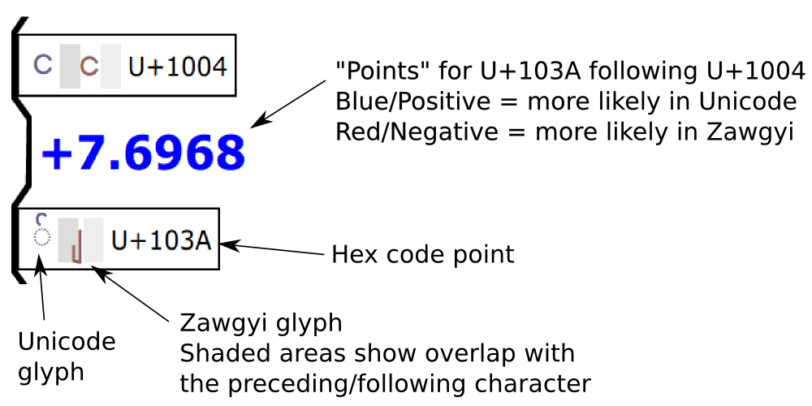

The "Zawgyi Probability", equal to 1/(1+e^(score)), is the probability that the string is Zawgyi given the training data and given that the string is either Unicode or Zawgyi.
Unrolled Markov Chain
Legend:

The Markov model is based on the odds of "transitioning" between the characters of the string, including from the beginning to the first character and from the last character to the end. Some transitions are more common in Zawgyi (negative numbers, red), while some transitions are more common in Unicode (positive numbers, blue). The larger the magnitude of the transition number, the more it contributes to the overall score, which is the sum of all transition numbers.
More precisely, the transition number is log(Pu)-log(Pz), where Pu is the probability of the transition according to Unicode data, and Pz is the probability of the transition according to Zawgyi data.
Characters labeled as "null state" means that they are not given special meaning in the Markov model. Only Myanmar, Myanmar Extended-A, Myanmar Extended-B, and Unicode Spaces are included. Additionally, Myanmar digits, in the range U+1040 through U+1049, are excluded and treated as the null state.
The Unicode (Noto Sans) and Zawgyi glyphs are shown for each code point. Since many Zawgyi glyphs overlap with the preceding or following character, extra padding is given to better illustrate the behavior of the character.